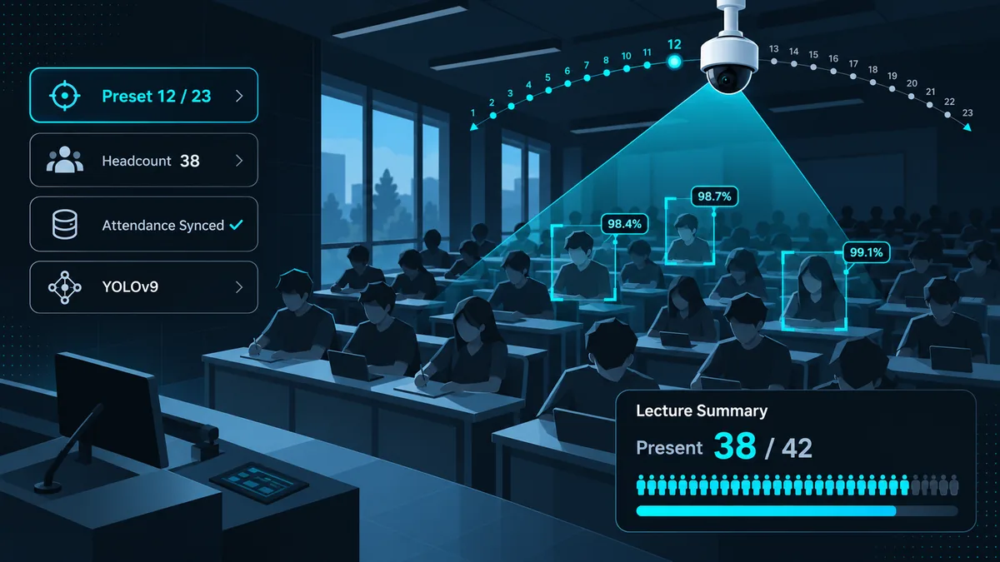

Computer vision attendance with a PTZ camera
- 1
- PTZ camera per classroom instead of a wall of fixed cameras
- 23
- presets per sweep in the original deployment
- ~3×
- faster headcount on CPU after moving to YOLO26 (lab)
- 0
- unknown face vectors stored: kept in memory per lecture
- ONVIF
- InsightFace-REST
- TensorRT
- Milvus
- YOLOv9
- YOLO26
- PostgreSQL
- Docker

The problem
Marking attendance in a lecture hall by hand costs minutes of every class. Doing it with cameras usually means one fixed camera per section of the room, which multiplies hardware, cabling and cost across a campus.
The constraint that shaped this system: one pan-tilt-zoom camera per room. A PTZ camera can cover a whole hall, but only one part of it at a time — so the design problem becomes scheduling attention, and accepting that attendance is assembled from a sweep rather than captured in an instant.
The system
Each camera runs an ONVIF preset sweep: move to the faculty position first, wait out the zoom and focus settling time, capture, then traverse the configured class presets, then the wider positions used for counting. The sweep is gated to class hours, and frames are published over RTSP into a shared buffer.
Recognition workers consume that buffer, call an InsightFace service for 512-dimension embeddings, and do a top-1 nearest-neighbour search against a Milvus collection with an L2 distance threshold. Matches become attendance records in a PostgreSQL table partitioned by year. A scheduled job pushes the current lecture's attendance to the institution's ERP at a fixed interval during class hours, with a manual resend endpoint for staff.
Running alongside it, on a second buffer, is a YOLOv9 person-detection service producing a headcount from the wide positions.
Why a second model that recognises nobody
The headcount service is the part I would point at first. Face recognition can only tell you about people it matched; it is structurally incapable of telling you it missed someone. A student facing away, badly lit or occluded simply does not appear, and the system has no internal signal that anything is wrong.
An independent headcount does have that signal. If recognition names eleven people and detection counts nineteen bodies, the gap is visible without anyone reviewing footage. It is a cheap, deliberately redundant cross-check against a failure mode the primary model cannot self-report — and it is the difference between a system that is confidently wrong and one that knows it should be doubted.
It has its own weakness: counts are summed across camera positions, and overlapping fields of view can double-count the same person. That makes it a discrepancy signal, not a ground truth, and it should be read as one.
Decisions and their costs
Timed sweeps over event-driven capture. The cycle is built from fixed waits for zoom and focus settling — several minutes of deliberate sleeping per full cycle. It is simple, predictable, and gentle on the camera's motors. It also means a short faculty window can be missed entirely, because the camera is simply pointed elsewhere when it opens.
Top-1 matching with a distance threshold and no margin check. Cheap and fast. But with no comparison against the second-best match, two similar-looking faces produce a confident wrong answer rather than an abstention. A margin test is the first accuracy change I would make.
Acknowledge before persist. The ingestion endpoint returns success before the database write completes, which keeps the capture loop from blocking. A failed write is logged and never retried, so a record can be acknowledged and still not exist. For attendance this is the wrong default — an outbox with retries is the fix, and it is the first reliability change I would make.
Unbounded queues. No backpressure logic to write, and no limit on memory growth if consumers fall behind producers. Fine while throughput holds; a slow failure when it does not.
Liveness detection built but gated off. A separate face-liveness service exists and is deployed, and the system currently runs with it disabled. Without it, a photograph held to a camera is a live question rather than a solved one.
What is not measured
No recognition accuracy, latency or throughput figures were produced for this system. The sweep cycle time is calculable from the configured waits, but that is arithmetic over configuration, not a measurement of a running deployment.
The instrumentation worth adding, in order: the recognition-versus-headcount discrepancy per lecture, which is already the system's own health signal; end-to-end lag from capture to ERP push; and queue depth, which is the leading indicator for the unbounded-queue problem above.
Rebuilt as a platform app
In November 2026 I rebuilt the system as the second app of the CCTV attendance platform. It already shared that platform’s InsightFace-REST, Milvus and PostgreSQL, but it ran Python 3.8 with no CI, mounted its source into containers and was configured for a single site. I rejected keeping a separate repository, which means a second pipeline that drifts from the platform’s release and security rules, and folding it into the CCTV per-frame pipeline, which would bend a continuous stream around lecture slots and preset sweeps. As a platform app it gets the same CI, compiled images, releases and self-rolling-back deploys, a separate database and login per client, and read-only access to the face index. The rebuild is lab-tested: camera moves sit behind a small interface and are simulated, because no PTZ camera was available, so a real camera needs an adapter and a test.
YOLO26 for the headcount. Headcount now runs on the CPU with Ultralytics YOLO26, offline and from a SHA-256-checked checkpoint. Measured on a laptop CPU, one 2304×1312 frame takes 2.9–3.0 s with yolo26l against 8.4–9.4 s with YOLOv9-e, about three times faster; a 640×640 frame takes 0.4 s against 1.1 s, and the model loads in 1.2 s against 5.9 s. A 20-preset sweep takes about four minutes per classroom, so one headcount per sweep keeps up without a GPU. YOLO26 is AGPL-licensed, so a commercial install needs an enterprise licence or a swap to a permissively licensed detector; that is recorded as a gate before any paid client.
Writes that survive a restart. The rebuild closes the acknowledge-before-persist gap described above. Every batch of recognitions and headcounts is written to an on-disk spool and fsynced before it is queued, sent oldest first, and deleted only when the database answers that the transaction committed; a plain 200 is not enough. A batch resent after a lost reply saves nothing twice, a refused payload is set aside for a person instead of blocking the queue, and a full spool refuses new work and takes readiness down rather than dropping records silently.
Unique faces per lecture, kept in memory only. The headcount sees bodies and the recognised count sees only enrolled people; neither says how many different faces the camera saw. Each 512-d vector that recognition already produces is compared in memory with the faces seen earlier in that room and lecture, so the extra cost is one comparison per face. An unenrolled person’s face vector is biometric data the system has no consent to keep, so vectors live only for that lecture and only the number is stored. In a two-person lab test, views of the same person scored 0.52–0.65 alike and different people at most 0.13, so it counted two at every cut-off from 0.30 to 0.55: a tiny sample, but a wide margin.
What the first runs caught. The first full test saved headcounts but no recognitions: every frame with a face raised KeyError: 'id', because the Milvus client returns the person’s ID inside the hit’s entity fields and the unit test had mocked the shape I expected rather than the shape it returns. The test now uses the real shape. Then one person close to the camera was counted five times across two frames, from boxes on the head, chest, legs and a hand; raising the detector’s confidence from Ultralytics’ 0.25 default to 0.75 left only the real one, with the trade-off for distant students written into the code.
What this demonstrates
Designing around a hardware constraint rather than against it, and building a cheap independent check against the failure a model cannot report about itself. The judgement on display is mostly about what the system does not know — and making that visible instead of letting a confident number stand unchallenged.
Client institutions are not named here, and no student data, imagery or configuration appears in this write-up.
Other case studies
Face recognition attendance on a Jetson Orin Nano · Face recognition attendance across 20+ camera streams · Production voice AI for drive-thru ordering
Full CV · Download UAE CV (PDF) · Discuss an AI engineering opportunity